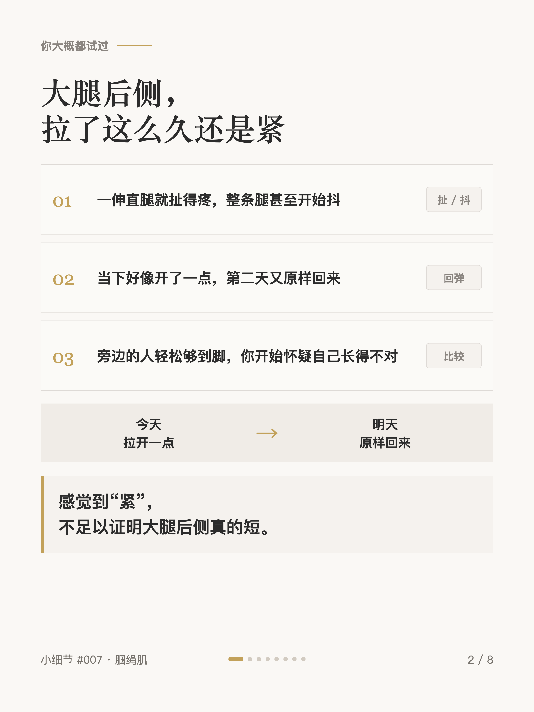
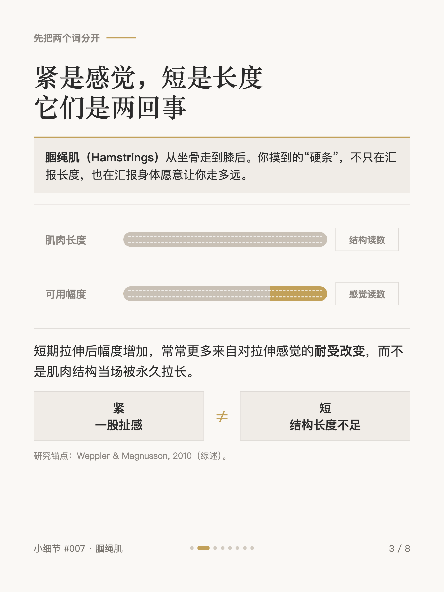
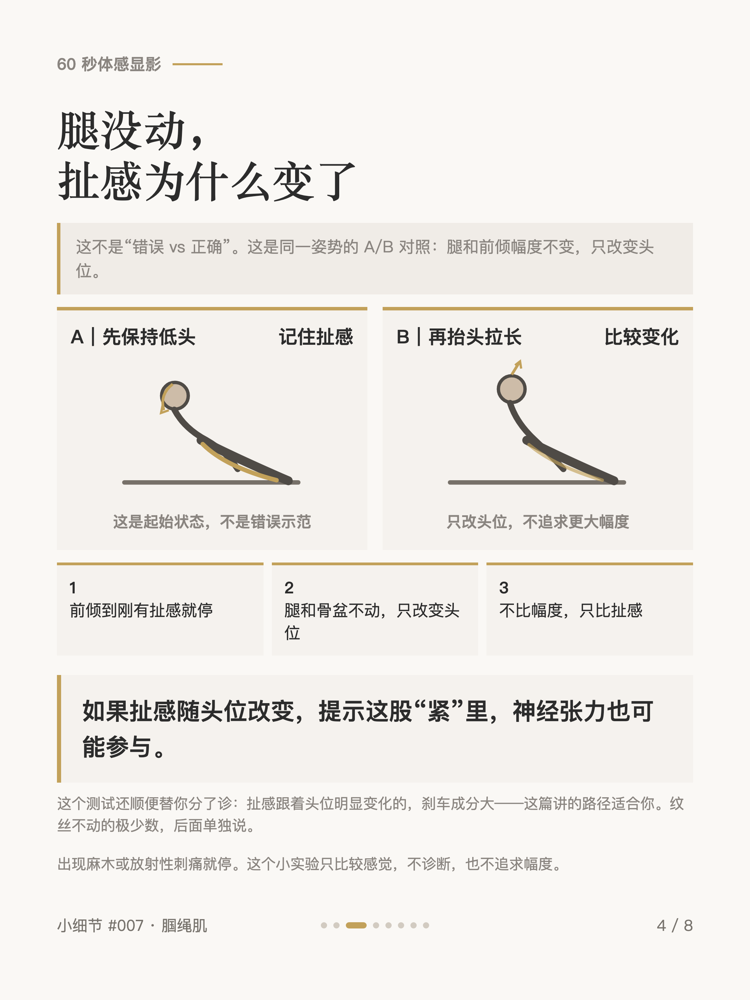
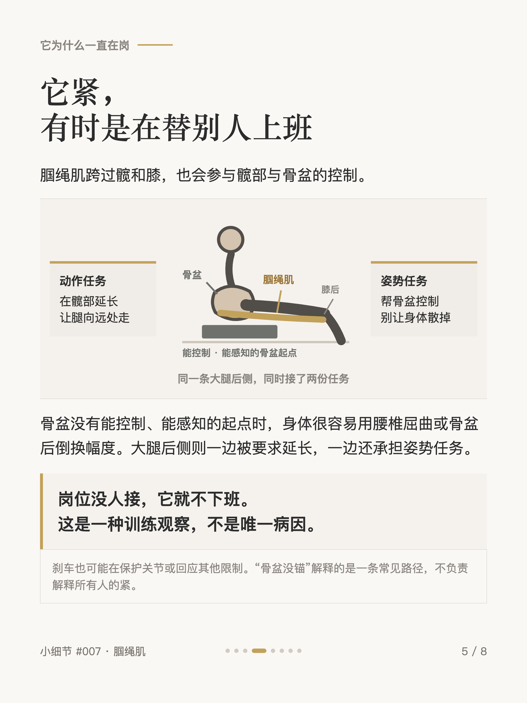
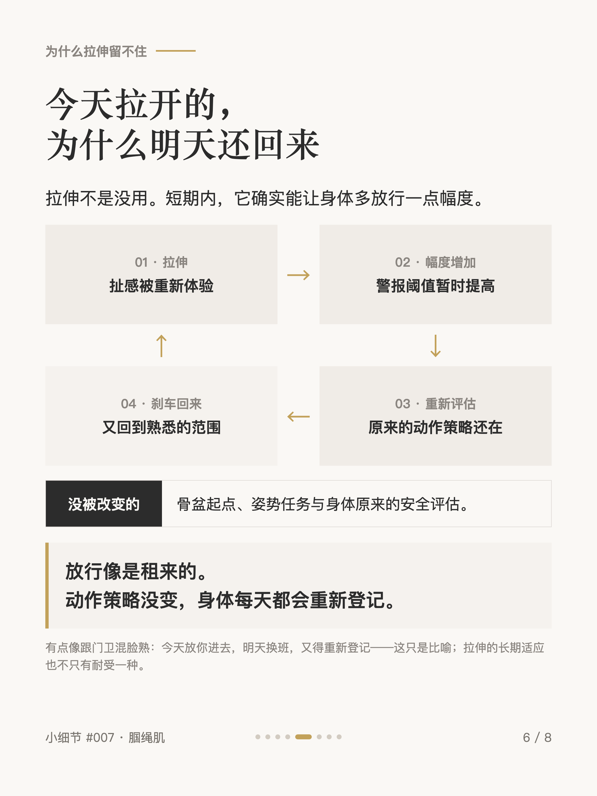
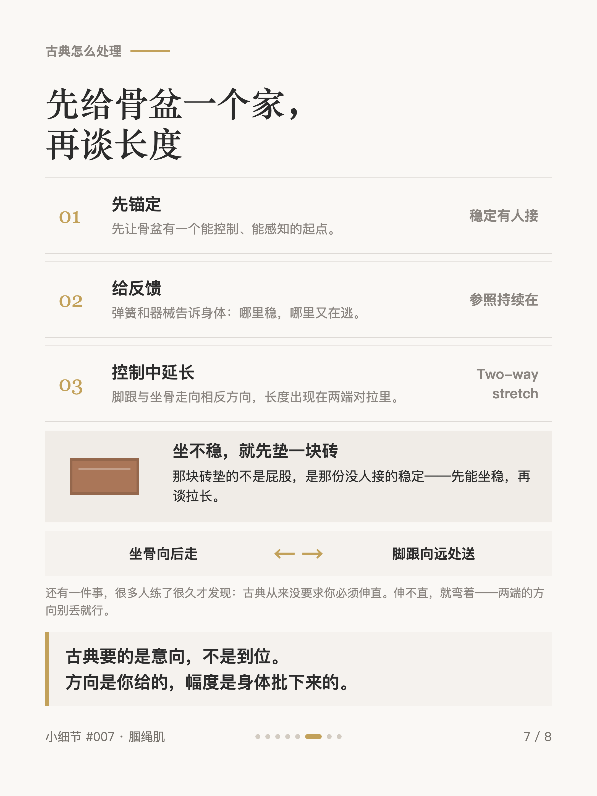
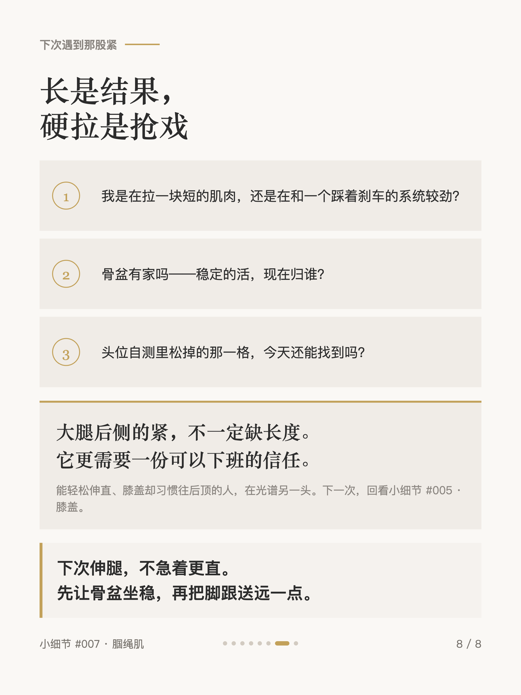

普拉提小细节 #007
腿伸不直，大腿后侧在踩刹车

1 / 8

2 / 8

3 / 8

4 / 8

5 / 8

6 / 8

7 / 8

8 / 8
← 左右滑动浏览全部卡片 →
拉了很久的大腿后侧，今天拉开明天回来——感觉到"紧"，不足以证明腘绳肌真的短。卡片里有一个 60 秒自测：腿完全不动，只改变头和胸椎的位置，扯感当场变化——两秒钟肌肉来不及变长，说明神经张力也参与其中。
它紧，有时是在替别人上班：骨盆在前屈里没有能控制的起点，大腿后侧一边被要求延长，一边还承担姿势任务。所以古典普拉提几乎不硬拉——先锚定骨盆，长度出现在两端对拉里。伸不直就弯着，方向别丢就行。